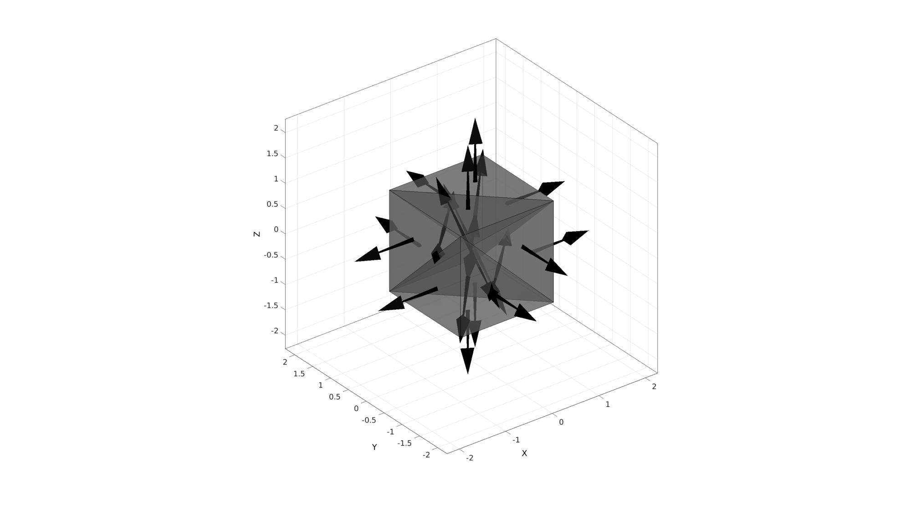
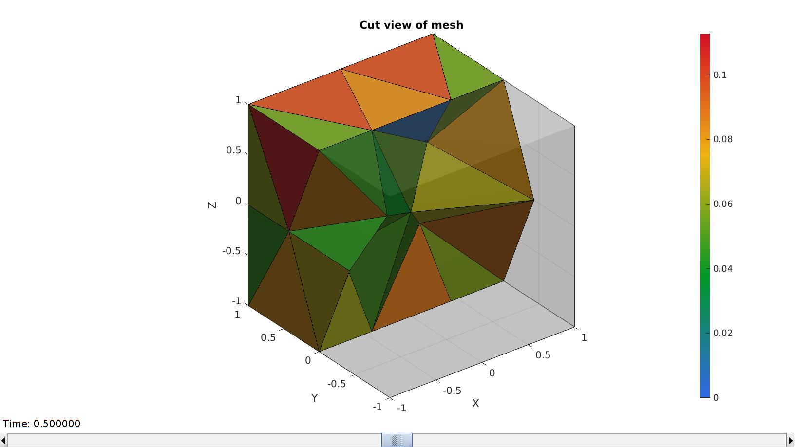
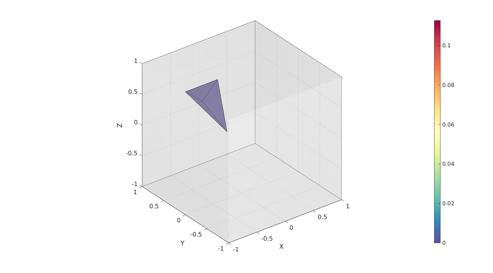

tetVol
Below is a demonstration of the features of the tetVol function
Contents
clear; close all; clc;
Syntax
[VE,L]=tetVol(E,V);
Description
This function computes tetrahedral element volumes. The input is the element description (E) and the nodes (V). The output is the element volumes (always positive) and a logic denoting wheter the element appears to be valid (1) or inverted (0).
Examples
Plot settings
cMap=gjet(250); faceAlpha1=1; faceAlpha2=0.65; edgeColor1='none'; edgeColor2='none'; fontSize=15;
Example: Computing the volume of tetrahedral elements
Create example geometry
% Creating a meshed box boxDim=[2 2 2]; % Box dimenstions pointSpacing=1; %Approximate point spacing [meshStruct]=tetMeshBox(boxDim,pointSpacing);
%%%%%%%%%%%%%%%%%%%%%%%%%%%%%%%%%%%%%%%%%%%%% --- TETGEN Tetrahedral meshing --- 03-Aug-2022 15:03:07 %%%%%%%%%%%%%%%%%%%%%%%%%%%%%%%%%%%%%%%%%%%%% --- Writing SMESH file --- 03-Aug-2022 15:03:07 ----> Adding node field ----> Adding facet field ----> Adding holes specification ----> Adding region specification --- Done --- 03-Aug-2022 15:03:07 --- Running TetGen to mesh input boundary--- 03-Aug-2022 15:03:07 Opening /mnt/data/MATLAB/GIBBON/data/temp/temp.smesh. --- Done --- 03-Aug-2022 15:03:07 %%%%%%%%%%%%%%%%%%%%%%%%%%%%%%%%%%%%%%%%%%%%% --- Importing TetGen files --- 03-Aug-2022 15:03:07 --- Done --- 03-Aug-2022 15:03:07
Acces output fields
E=meshStruct.elements; V=meshStruct.nodes; Fb=meshStruct.facesBoundary;
Computing the volume
[VE,logicPositive]=tetVol(E,V,0);
The summed volume should match the theoretical
volume_theoretical=prod(boxDim); volume_total=sum(VE); disp(['Theoretical volume:',sprintf('%f',volume_theoretical)]); disp(['Total volume computed:',sprintf('%f',volume_total)]);
Theoretical volume:8.000000 Total volume computed:8.000000
Visualize
[F,CF]=element2patch(E,VE); plotLevel=0.5.*mean(VE(:)); cFigure; hold on; gpatch(Fb,V,'w','none',0.25); gpatch(F(CF<plotLevel,:),V,CF(CF<plotLevel,:),'k',0.5); % patchNormPlot(F,V); caxis([0 max(VE(:))]); axisGeom; camlight headlight; colormap spectral; colorbar; drawnow;
Visualizing a cut view of the mesh featuring elements coloured towards volume.
meshStruct.elementData=VE; meshView(meshStruct,[]); caxis([0 max(VE(:))]);
Example for a mesh containing an inverted element
Volumes are always positive but inverted elements have a 0 in the inverted logic. In the example below the first element is inverted which changes the logic to return a 0 for this element.
E_inverted=E;
E_inverted(1,:)=E_inverted(1,[4 1 2 3]); %Invert the first element
[VE,logicPositive]=tetVol(E_inverted,V,0);
Visualize
[F,CF]=element2patch(E_inverted,VE); cFigure; hold on; gpatch(Fb,V,'w','none',0.25); gpatch(F(CF<0,:),V,CF(CF<0),'k',0.5); % patchNormPlot(F,V); caxis([0 max(VE(:))]); axisGeom; camlight headlight; colormap spectral; colorbar; drawnow;

GIBBON www.gibboncode.org
Kevin Mattheus Moerman, gibbon.toolbox@gmail.com
GIBBON footer text
License: https://github.com/gibbonCode/GIBBON/blob/master/LICENSE
GIBBON: The Geometry and Image-based Bioengineering add-On. A toolbox for image segmentation, image-based modeling, meshing, and finite element analysis.
Copyright (C) 2006-2022 Kevin Mattheus Moerman and the GIBBON contributors
This program is free software: you can redistribute it and/or modify it under the terms of the GNU General Public License as published by the Free Software Foundation, either version 3 of the License, or (at your option) any later version.
This program is distributed in the hope that it will be useful, but WITHOUT ANY WARRANTY; without even the implied warranty of MERCHANTABILITY or FITNESS FOR A PARTICULAR PURPOSE. See the GNU General Public License for more details.
You should have received a copy of the GNU General Public License along with this program. If not, see http://www.gnu.org/licenses/.